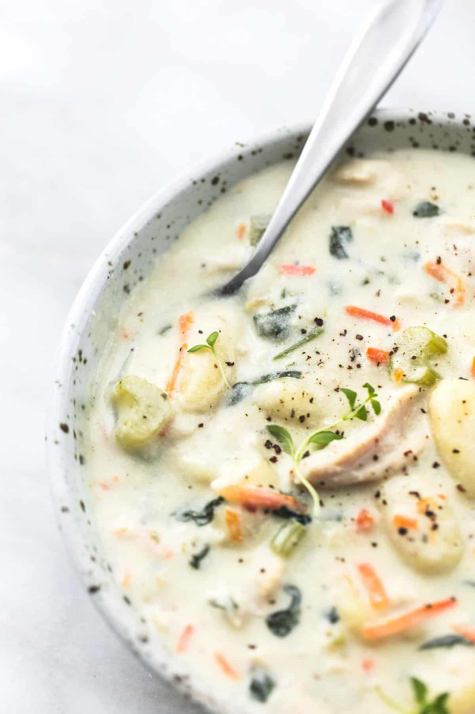

Home
Chicken Gnocchi Soup

This creamy chicken gnocchi soup is a favorite for cool weather sports
nights when we all eat at different times. After adding the chicken and
gnocchi, throw it in a slow cooker on the lowest setting so it is ready
when you are. Serve with pesto bread sticks.
Ingredients
- ¼ cup butter
- 1 tablespoon extra-virgin olive oil
- 1 large zucchini, diced
- 2 stalks celery, diced
- 1 yellow onion, diced
- ½ red bell pepper, diced
- 2 carrots, shredded
- 4 cloves garlic, minced
- ¼ cup all-purpose flour
- 3 cups chicken broth, or more as needed
- 1 cup half-and-half
- 1 pint fat-free half-and-half
- 2 cups shredded rotisserie chicken meat
- 1 (16 ounce) package small gnocchi
- 2 cups torn fresh spinach
- ½ teaspoon ground thyme
- ¼ teaspoon freshly grated nutmeg
- salt and ground black pepper to taste
Steps
-
Melt butter with olive oil in a large soup pot over medium heat. Cook
and stir zucchini, celery, onion, red bell pepper, carrots, and garlic
in hot butter-oil until vegetables are soft, 8 to 10 minutes. Stir in
flour until vegetables are coated; cook for 2 more minutes.
-
Pour in chicken broth and stir until flour paste combines with broth and
soup is thick and smooth, about 5 minutes. Pour in both kinds of
half-and-half; bring to a simmer. Cook until soup is slightly thickened,
about 5 more minutes.
-
Gently fold chicken, gnocchi, and spinach into soup. Season with thyme,
nutmeg, salt, and pepper. Adjust thickness by adding more chicken broth,
if desired.